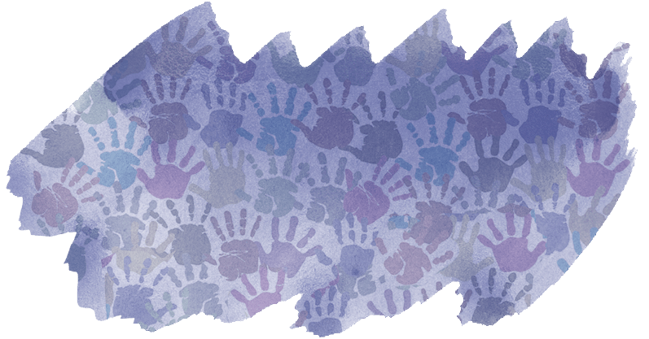

Praticado, na maioria das vezes, por familiares ou pessoas do círculo de convivência da criança e da/o adolescente, o abuso sexual infantil compreende uma série de práticas sexuais que podem ou não envolver contato físico. Sentimentos de medo, vergonha e até mesmo culpa pela ocorrência do ato, além de fatores como vulnerabilidade social e econômica, fazem com que muitas situações de abuso sequer sejam reveladas.
O QUE É ABUSO SEXUAL INFANTIL?
Abuso sexual infantil é o termo utilizado para nomear qualquer ato sexual que envolva crianças ou adolescentes, incluindo desde carícias e toques íntimos, masturbação, exibicionismo e voyeurismo, penetração vaginal, anal ou oral, entre outras práticas que podem ou não envolver contato físico. Na maioria das vezes, o abuso é cometido por familiares ou pessoas do círculo de confiança da criança/adolescente, em ambiente doméstico e de forma contínua e reiterada. Trata-se de uma grave violação de direitos humanos, um problema social e de saúde pública que traz danos físicos, psicológicos e sociais às vítimas e suas famílias.
FRASES QUE SERÃO RELATADAS PARA OS ALUNOS
“Mamãe, meu tio me pediu para sentar no colo dele para assistir televisão. Ele começou a passar a mão embaixo do meu vestido de um jeito que não gostei”
“Eu estava na escola e meu coleguinha pediu para me ver fazendo xixi”
“Eu conheci um amigo em um joguinho na internet, ele me pediu para mandar foto sem blusa. Eu mandei e agora ele está me ameaçando, dizendo que se eu não mandar mais, ele vai publicar as fotos na internet”
“Meu padrasto pediu para tomar banho comigo, eu aceitei. Durante o banho, ele começou a colocar a mão em minhas partes íntimas”
“Eu conheci um cara na internet, ele começou a falar que queria muito me conhecer. Ele disse que iria me buscar, saí escondido da minha mãe. Quando cheguei, era um cara bem mais velho que ele falava e abusou de mim dentro do carro.”
“Toda vez que meu pai bebe, entra no meu quarto, me pede para tirar a roupa e me estupra. Tentei falar com a minha mãe, mas ela não acredita”
“Eu estava na escolinha de futebol e, enquanto tomava banho, meu professor entrou dentro do vestiário e começou a tirar fotos minhas”
“Meu ex-namorado fica me perseguindo, falando que se eu não voltar para ele, vai espalhar meus nudes”
“Meu namorado queria ter relações sexuais comigo, mas eu não estava pronta. Um dia, quando estava na casa dele, ele me forçou a fazer mesmo eu não querendo”
COMO AGIR EM UMA SITUAÇÃO DE ABUSO SEXUAL INFANTIL
Qualquer pessoa que tiver conhecimento ou presencie uma violência contra criança ou adolescente, incluindo situações de violência sexual, tem o dever de comunicar o fato imediatamente ao Conselho Tutelar do município, conforme aponta o artigo 13 do Estatuto da Criança e do Adolescente. Também é possível registrar uma denúncia nas delegacias de polícia, comuns ou especializadas no atendimento à criança e ao adolescente, ou no Disque 100.
Disque 100
Canal do governo federal que recebe denúncias de qualquer violação de direitos humanos, incluindo situações de violência sexual contra crianças e adolescentes. As denúncias são anônimas e podem ser realizadas de qualquer parte do país. O atendimento funciona 24 horas, todos os dias da semana, inclusive nos finais de semana e feriados. Após a ligação, as denúncias são encaminhadas aos órgãos competentes na cidade de origem da criança ou adolescente para que sejam investigadas.
App Direitos Humanos Brasil
Disponível nos sistemas Android e iOS, o aplicativo do Disque 100 e Ligue 180 – Central de Atendimento à Mulher recebe denúncias, solicitações e pedidos de informação sobre temas relacionados a violências e violações dos direitos humanos.
Conselho Tutelar
Criados pelo ECA, os Conselhos Tutelares são órgãos ligados às prefeituras que são responsáveis por receber denúncias de violações de direitos de crianças e adolescentes e notificar o Ministério Público e o Poder Judiciário. Em cada cidade há pelo menos um conselho e a denúncia pode ser feita por telefone ou pessoalmente, na sede do Conselho Tutelar. Após a denúncia, os conselheiros têm o dever de apurar os fatos e, caso a denúncia seja verídica, encaminhá-la ao Ministério Público.
Ministérios Públicos
Recebem denúncias de qualquer violação de direitos, incluindo as diversas violações de direitos de crianças e adolescentes.
Delegacia de Proteção à Criança e ao Adolescente; de Defesa da Mulher ou comuns
Procure pessoalmente a delegacia mais próxima da sua casa para registrar uma denúncia. A autoridade policial deverá registrar o boletim de ocorrência e instaurar o inquérito policial.
Disque 190
Caso precise de socorro imediato, o canal recomendado é o Disque 190, da Polícia Militar. O atendimento também funciona 24 horas, todos os dias da semana.
Polícia Rodoviária Federal
Casos de violência sexual de crianças e adolescentes nas estradas brasileiras, principalmente os crimes de exploração sexual, podem ser denunciados para a Polícia Rodoviária Federal pelo Disque 191. A ligação também é gratuita e o atendimento funciona 24 horas, todos os dias da semana.